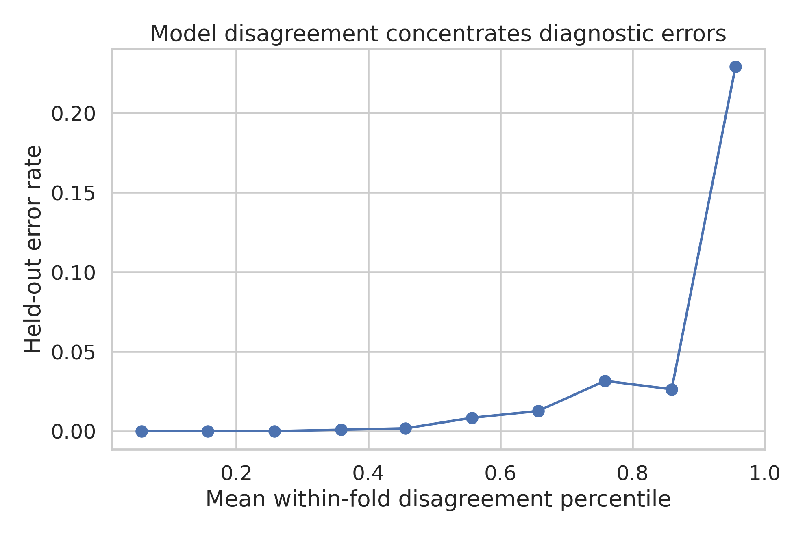
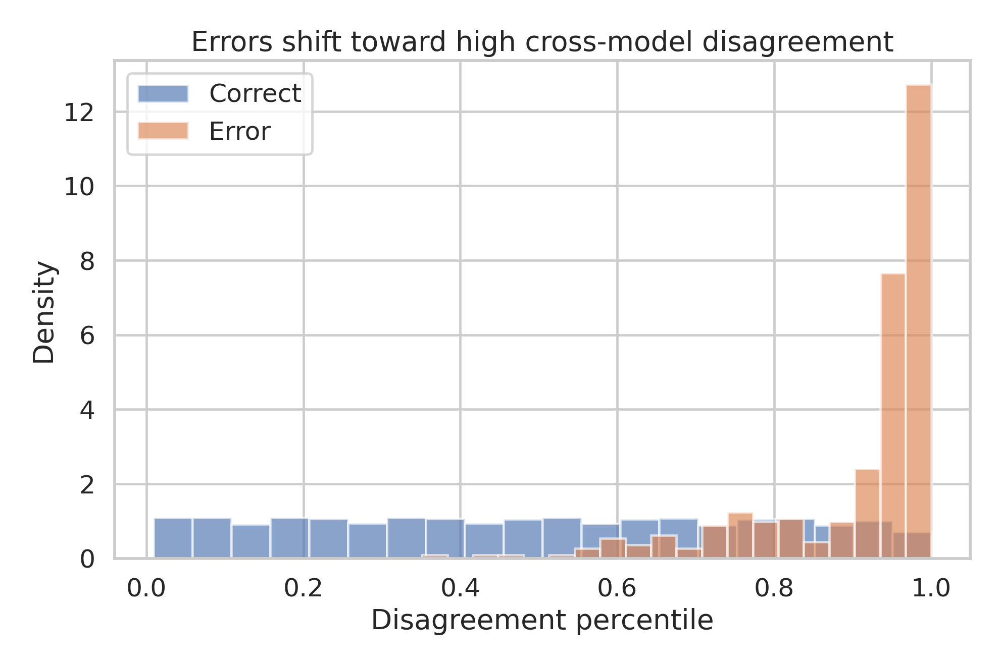
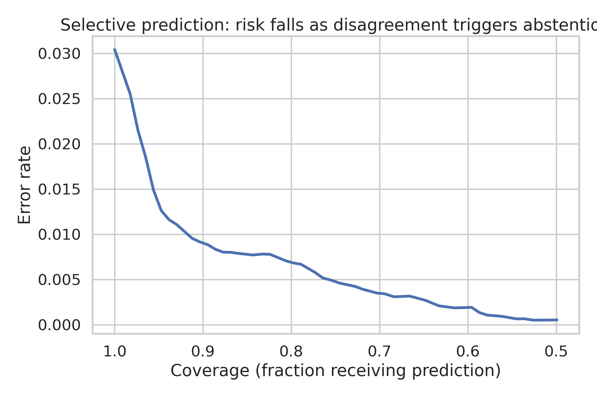

Full technical report. Computational/open-data experiment. September 21, 2026.
Research proof of concept only. Not a clinical diagnostic system.
Five different model families were evaluated on public breast-tumor measurements using repeated held-out prediction. Before outcomes were inspected, the experiment fixed a three-part success gate: at least 2x error enrichment in the highest-disagreement quintile, at least 25% error reduction after abstaining on that quintile, and a cluster-bootstrap confidence interval excluding no enrichment.
All criteria passed. Disagreement isolated a small set with sharply elevated error. Removing this set from automatic prediction reduced error while retaining four fifths of predictions. The finding supports disagreement as an empirical safety signal, but external validation is required.
Do disagreements among diverse, independently trained classifiers identify breast-tumor predictions at elevated error risk and enable safer selective prediction?
The top within-fold quintile of model disagreement will have at least twice the error rate of all remaining predictions.
Abstaining on that preselected quintile will reduce error among retained predictions by at least 25%.
The lower bound of a patient-clustered bootstrap 95% confidence interval for error enrichment must exceed 1.0.
The protocol file was written before running the outcome analysis. It defines the endpoint, dataset, five model classes, repeated stratified five-fold validation, the disagreement construction, top-quintile threshold, metrics, and failure policy.
| Component | Locked choice |
|---|---|
| Endpoint | Malignant versus benign |
| Validation | 20x repeated stratified 5-fold CV |
| High disagreement | Within-fold percentile > 0.80 |
| Primary gate | Error enrichment ≥ 2.0 |
| Secondary gate | Error reduction ≥ 25% |
| Uncertainty gate | 95% CI lower bound > 1.0 |
Any failed component would classify the experiment as negative. The full negative output would be preserved and no success paper produced.
The Wisconsin Diagnostic Breast Cancer dataset contains 569 observations derived from digitized fine-needle aspirate images. Each observation has 30 numeric features describing radius, texture, perimeter, area, smoothness, compactness, concavity, concave points, symmetry, and fractal dimension at mean, standard-error, and worst-value summaries.
| Class | Count | Fraction |
|---|---|---|
| Malignant | 212 | 37.26% |
| Benign | 357 | 62.74% |
Raw data SHA-256: d606af411f3e5be8a317a5a8b652b425aaf0ff38ca683d5327ffff94c3695f4a.
Source: UCI Machine Learning Repository. Dataset page: https://archive.ics.uci.edu/dataset/17/breast+cancer+wisconsin+diagnostic
The 30 predictors are ten cell-nucleus properties summarized in three ways. This creates correlated feature blocks. Linear, kernel, tree, local-neighbor, and generative models respond differently to that structure, making the dataset appropriate for testing whether model disagreement carries information.
| Base property | Summaries |
|---|---|
| Radius | Mean, standard error, worst |
| Texture | Mean, standard error, worst |
| Perimeter | Mean, standard error, worst |
| Area | Mean, standard error, worst |
| Smoothness | Mean, standard error, worst |
| Compactness | Mean, standard error, worst |
| Concavity | Mean, standard error, worst |
| Concave points | Mean, standard error, worst |
| Symmetry | Mean, standard error, worst |
| Fractal dimension | Mean, standard error, worst |
Model diversity is the experimental instrument. The models were not selected to maximize leaderboard performance; they were selected because their assumptions differ.
| Model | Distinctive assumption |
|---|---|
| Logistic regression | Linear log-odds after scaling |
| RBF SVM | Nonlinear kernel boundary |
| Random forest | Piecewise tree partitions and feature subsampling |
| K-nearest neighbors | Local neighborhood geometry |
| Gaussian naive Bayes | Class-conditional univariate Gaussian features |
The ensemble probability is the unweighted mean of the five held-out probabilities.
Twenty repeats of stratified five-fold cross-validation create 100 held-out folds. Every sample receives one held-out prediction per repeat, for 11,380 total prediction records. Repetition measures stability across alternative partitions; it does not create new patients.
For each held-out prediction, the analysis computes the standard deviation of five probabilities and entropy of their binary votes. Their sum is ranked within the held-out fold. Ranking controls fold-level scale differences while preserving the preregistered order.
High disagreement is the top 20% within a fold. The choice was fixed rather than optimized against observed errors.
This score is deliberately empirical. It asks whether models built from different assumptions disagree, not whether one model reports a low internal confidence.
| Metric | Value |
|---|---|
| Held-out ROC AUC | 0.9942 |
| Held-out accuracy | 96.96% |
| Overall error | 3.04% |
| Held-out predictions | 11,380 |
| Unique samples | 569 |
High discrimination sets a demanding test: disagreement must find mistakes even when mistakes are uncommon.

The error rate rises sharply at high disagreement. The fixed top-quintile comparison avoids choosing a visual breakpoint after seeing the curve.
The supporting data are stored in results/disagreement_deciles.csv.

Incorrect predictions shift toward higher disagreement percentiles. Correct predictions dominate because overall error is low, but their disagreement distribution remains concentrated at lower values.
| Quantity | Observed | Required |
|---|---|---|
| Top-quintile error | 12.35% | - |
| Remaining error | 0.68% | - |
| Error enrichment | 18.08x | ≥ 2.0x |
| 95% CI lower bound | 7.56 | > 1.0 |
| Error reduction | 77.5% | ≥ 25% |
Each tumor appears in 20 held-out partitions. Treating all 11,380 prediction records as independent would give falsely narrow uncertainty intervals. The bootstrap therefore samples 569 unique IDs with replacement and carries every repeated prediction belonging to each selected ID.
For each of 5,000 replicates, the analysis recomputes error in the high-disagreement and remaining groups, then their ratio. The percentile interval is 7.56-85.31. Its width honestly reflects a small number of errors, while the lower bound still exceeds the no-enrichment value.

Coverage-risk analysis asks what happens when the system abstains on increasingly disagreeing cases. At the locked 20% abstention rule, retained error falls from 3.04% to 0.68%, a 77.5% relative reduction.
Abstention is not a clinical recommendation here. It is a formal demonstration that disagreement orders cases by empirical error risk.
Diverse models encode different inductive biases. When they agree, the classification is comparatively stable across assumptions. When they disagree, the sample is more sensitive to modeling choices. In this dataset, that sensitivity is strongly associated with actual error.
The contribution is a safety-layer concept rather than a new disease classifier. The same logic could be tested in imaging, genomics, drug response, or any setting where several credible model classes are available.
These boundaries are part of the result, not optional disclaimers.
The project is designed for audit. The raw file is checksummed; the protocol is immutable in the delivered batch; every prediction is saved; every plotted value has a CSV source; and numeric claims in the report are copied from a machine-readable metrics file.
The code uses deterministic seeds. Running the script recreates the held-out predictions, metrics, tables, and plots. Software-version differences may create tiny floating-point changes but should not alter the gate decision.
Freeze the present model and disagreement definition. Identify at least two independent cohorts with the same endpoint and compatible features. Apply the complete pipeline without tuning the 80th-percentile threshold on outcomes.
The experiment uses public, de-identified data. No wet-lab work, patient contact, or intervention occurs. The output is research software and documentation.
Do not use this model for diagnosis, triage, reassurance, or treatment decisions. Clinical deployment would require representative external data, regulatory and institutional review, monitoring, security controls, and qualified medical oversight.
cd projects/SP-001-model-agreement-instrument python3 code/run_analysis.py
results/metrics.json: gate metricsdata/processed/held_out_predictions.csv: all held-out probabilities and disagreement scoresresults/disagreement_deciles.csv: plot dataresults/coverage_risk.csv: coverage-risk datafigures/: publication figuresThe delivered directory separates protocol, code, raw data, processed data, results, figures, report, and paper. A SHA-256 manifest at the repository root permits integrity checking after transfer.
| Directory | Purpose |
|---|---|
| protocol | Locked scientific plan |
| code | Exact reproducible analysis |
| data/raw | Original public inputs |
| data/processed | Held-out prediction dataset |
| results | Metrics and plot-support tables |
| figures | Publication graphics |
| report, paper | Human-readable deliverables |
The result motivates harder tests that remain falsifiable:
Each extension should receive its own locked protocol. Failure must remain publishable internally rather than being tuned away.
Cross-model disagreement passed every preregistered criterion as an empirical uncertainty instrument in this benchmark. The top disagreement quintile had 18.08 times the error of remaining predictions, and excluding it reduced held-out error by 77.5% at roughly 80% coverage.
The result is genuinely useful because it transforms model diversity into a measurable warning signal. Its scientific value depends equally on the positive result and the stated limits: one curated dataset cannot establish clinical use. The next decisive step is unchanged-rule external validation.